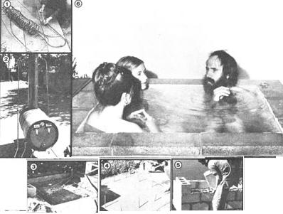

When our neighbor set up an elaborate steel tank, water pump, and heater complex in his back yard, my wife Joan and I wondered if the poor fellow was losing his marbles. And-when he then filled the giant bath apparatus with 110°F water . . . and asked us to join him in a dip-we knew he was crazy. Somehow, though, we finally agreed to shed our clothes and slowly (verrrry slowly) lowered our bodies into the steaming pool. The heated liquid made our hearts race and our limbs turn into limp rubber bands but-amazingly enough-felt delicious!
After a few blissful minutes, Joan and I both felt the urge to cool off, so we languidly dragged ourselves out of the tub. The night air felt unusually warm . . . then a wee bit crisp . . . and soon so downright cold that we were eager to plunge right back into the steaming vat and begin the cycle all over again.
In other words, we had both become as "crazy" as our neighbor ... we'd been stricken with the divine madness of hot tub bathing.
The human pastime of soaking-or steaming-oneself in sweltry water has a long and respectable pedigree. The Finns have a tradition of drenching themselves in hot saunas (and then rolling in the snow!), while the Japanese bathe in ofuros warmed to as high as a scalding 120°F ... and health-seeking people of all nationalities and classes have-for eons-lowered themselves into natural hot springs. Now, more and more Americans are building big vats and sharing the relaxing joys of soaking. Many of these hot-tub enthusiasts will tell you the experience is good for the circulation, for inducing a sleep that rivals the untroubled slumbers of childhood, for bringing body and soul together, and for providing a sense of warmth and community with others. But-even though everything these zealots say is true -we think the real reason folks sit in heated vats is simply because it's pure, unadulterated fun.
BATHING BLISS FOR $250
As you may have guessed by now, we Campbells were so infected by hot tub madness that we became determined to have a "poaching pool" of our own. We soon discovered, though, that we'd have to build-not buy-our bath of bliss ... because most commercial hot tubs cost well over $1,000. (We wanted to soak, but not get soaked!) Once we'd reached that conclusion, we had to decide what material to use for our hot tub's vat and figure out a way to warm the bath water. Neither Joan nor I can claim to be much of a "handyperson" when it comes to carpentry or welding, so homemade wood or steel tubs were out of the question. We needed a material that could hold a ton of heated H 2 0, yet one that amateur do-it-yourselfers could work with. We settled on concrete.
Our next question was what energy source to use for the hefty task of heating our planned tub's 250 gallons of water from 60° to 110°F. Most hot tubs are fired by natural gas, but we opted for a renewable fuel: wood.
Once we'd made those two choices, all the job required was careful planning, a bit of down-home cobbling, and a considerable amount of plain old-fashioned work. And, when it was all done, we'd constructed our own limb- and soul-soothing hot tub . . . for only $250!
Here's how we did it.
THE FOUNDATION TRILOGY: FORMS, STEEL, AND CONCRETE
Our first task was to build a cement base that would be sturdy enough to support both our square, concrete-block tub and lots of water. We picked a level, private, wind-shielded site, dug a 6-foot-square by 6-inch-deep pit ... and lined this foundation hole with a wooden form made from scrounged 2" X 6" lumber. Then we dug out four additional channels (6 inches deeper than the rest of the excavation) following the lines that would later mark the four sides of the tub. (The trenches allowed us to provide a doublethick concrete base-for extra support-under the tub's walls.)
Next we installed a grid of 16" squares-made from eight lengths of 3/8" steel reinforcing bar-to strengthen the foundation, and then put our inlet and outlet pipes in place. Each of the conduits was fitted with a flange (set on a 3" nipple) in its "in tub" end and a 6" nipple at its far end . . . to raise the pipes' tips above the level of the to-be-poured concrete. We also marked the location of the rebar pieces on the wooden forms (so we'd know where they were, later) and covered the pipe ends with tape to keep the openings clean.
The time had come to add concrete. We bought ours ready-mixed and poured in 3/4 of a yard, positioned the pipe openings and rebar grid with our hands, and leveled the concrete's surface with a long 2 X 4. Then we sank six U-shaped 12" X 16" X 12" pieces of reinforcing steel-bases down-six inches into the wet cement. These rebar "horseshoes" were (using the guidance provided by our previous frame markings) lined up at the outside intersection points of our grid ... so their "up" ends would poke into the concrete blocks. Joan and I sprayed our new "floor" frequently during the following two days (to let the base cure properly) and then began our masonry work.
CONCRETE BLOCKS ARE ALL THEY'RE STACKED UP TO BE
Somehow I ended up with the job of laying the four levels of blocks for the sides of our tub. I started this chore by lining up string boundaries for the first layer of block placements. (The bricklaying pattern was three blocks set "longways" and one "endways" on every wall ... which meant the rebar horseshoe uprights would go through every other block hole on each side.)
I cured the first layer (spraying it periodically) for two days before adding the other three levels. Then I thrust lengths of rebar into the block holes that were already supported-from their bottoms-by the "horseshoe" ends, filled all the openings with concrete ... and capped the wall with a layer of 8" X 16" stepping stones.
Now I'm a "fur piece" from being a master mason, so Joan and I were a bit nervous about the possibility of leaks. And sure enough-when the tub had finished its two weeks of curing-the dang thing spewed water from so many joints we could hardly fill it! The damage was reparable, though. We just added successive layers of a waterproof patching compound, a building block coating, and an airtight water seal . . . until we'd produced a tub so leakproof it was seaworthy!
OUR HEAT FEAT
Of course, we still had to figure out how to heat all that bath liquid. As you know, we'd planned to use wood heat to "bile up" our hot tub, but constructing such a system turned out to be harder in the doin' than it was in the imaginin'.
We first tried to adapt our home's Franklin stove to the purpose. I used a spring-type tubing bender to coil 50 feet of 1/2" copper tubing into an 8" diameter spiral (leaving five feet of straight pipe on each end) and gingerly stuffed this copper "spring" into the wood-burner's chimney. I then constructed a plumber's nightmare of pipework to hook this coil up to our small garden fountain pump and to the water-filled tub. Once the contraption was all set up, we lit the Franklin, crossed our fingers, and hoped for the best.
Eighteen hours later, half our wood pile had gone up in smoke and the house felt like the inside of a Dutch oven . . . but the water still wasn't hot enough to soak in properly! Down came the coil, the pipework, and our hopes . . . until I spotted an ad (in a back issue of MOTHER) for a conversion kit to change an old oil drum into a wood stove. That enticement inspired me to construct my own 55-gallon barrel stove.
A welder friend fabricated a stove door (complete with draft opening) out of 3/16" steel plate, while 1 used a saber saw to carve the loading hole in the barrel itself. I then secured the door in place with galvanized T hinges.
Moving to the back end of the stove, I cut a _"-diameter "smokestack" hole in the barrel's side and attached the chimney itself by cutting-and bending to 90° angles-a series of 2" tabs around the bottom pipe section . . . and fastening this "collar" to the drum with sheet metal screws. I also snipped slots in the upper part of the stovepipe (to accommodate the "in" and "out" copper coil lines) and installed a damper above the water-heating spiral. Last of all, I made four spraddied legs to support the heater . . . using flanges, backing plates, and two-foot sections of 1/2" galvanized pipe.
After placing the finished stove a safe distance from our house, I fastened the free ends of the copper coil tubing to some CPVC conduit (with compression fittings, galvanized unions, and two short pieces of galvanized pipe) and ran the outlet line through a hose fitting and into the tub. The intake line was equipped with a valve, hooked to the pump, and then plumbed up to the vat. (The pump was "tied in" to the line with female fittings and short pieces of hose ... so that it could be disconnected if necessary.)
We were ready to start cooking. I put a layer of sand in the drum, loaded the cylinder up with scrap lumber, flushed water through the system with a garden hose until all the air was out of the pipe complex, plugged the drain end ... and fired'er up. Once the stove got going, I adjusted the flow of water-from the hose through the heating coil-to around 40 gallons per hour . . . so that the temperature of the liquid as it left the heater was about 130°F.
When the tub was full (by that time the water had cooled to 110°), I disconnected the hose and started up the pump. We quickly found that our stove tire had to be kept small or the water in the coils would "boil out" ... causing an air lock that would stop our little pump. (A larger "circulator" should avert this difficulty.)
RUB-A-DUB-DUB, WE BUILT A HOT TUB
Well, we'd finally done it: The two of us had constructed a strong, watertight hot tub that could be easily brought up to-and maintained at-the proper temperature. Our work was over.
The whole job seemed to have taken forever. But when night fell and we eased ourselves slowly into the mind- and muscle-soothing water (with a candle casting a golden light upon the scene), we knew the project had been worth all the effort.
Here are a few extra bits of tub lore to help you on your restful way:
PLASTIC PIPE: We used CPVC. Regular PVC can't take the heat.
SEATING: Concrete blocks topped with stepping stones allow adjustable seating in our comfortable four person tub.
COVERING: A 4' X 4' square of plywood with handles and backing makes a nice roof to hold heat in while keeping leaves and/or critters out. Styrofoam insulation - added to the underside of this covering - would provide even better heat retention when the tub is not in use.
CHLORINE: A cup of bleach per bath keeps the germs down. (The chemical's unpleasant odor can be masked with lemons, mint sprigs, jasmine blossoms, or various oils and essences.)
FILTERS: Water filters will keep you from having to drain the tub after every three or four uses, as we do . . . but they are, of course, an additional expense. We simply installed a hose cock on our drain line so the "tired" bathing liquid can be used to water the garden.
SAFETY: Make sure your pump is well grounded, don't drink too much alcohol while "tubbing", don't let the water get too hot, and don't stay in your tub for too long at one time. In other words, use plain of common sense, and remember that you're sitting in a vat of very hot water.
TEMPERATURES: Most tubs are kept at temperatures ranging from a tepid 100° to a sizzling 115°F (a dial- type photographer's darkroom thermometer is handy for taking comfort readings). We've found the best tem perature for social soaks to be be tween 105° and 107°, while 110° to 115° will penetrate clear to the bone.
REFERENCES: Leon Elder'sHot Tubs ($3.95, Random House) is a fine introductory volume, while Build Your Own Hot Tub ($5.95, Ten Speed Press) by Ed Miller and Steven Flamm tells how to construct a wooden, conventionally heated vat for $500.
|
 |
|
|